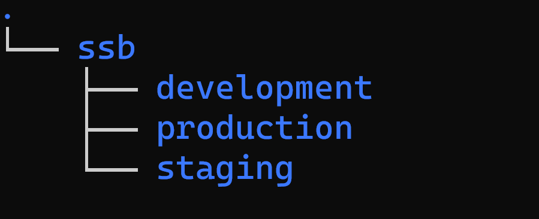
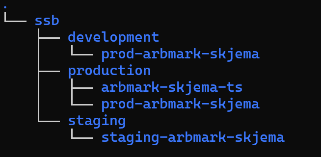
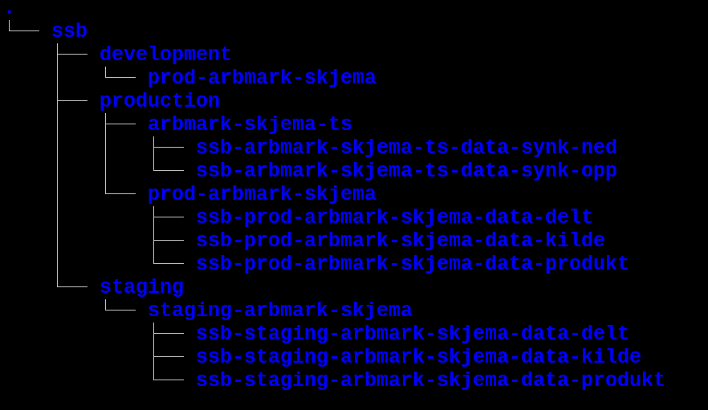

Hva er Dapla-team?
For å kunne jobbe med skarpe/ekte data på Dapla må man opprette et et Dapla-team. Et dapla-team er en gruppe personer som jobber med ett eller flere emneområder på SSBs dataplattform/Dapla. Når man oppretter et Dapla-team i SSB får man følgende:
- Lagringsområde for data i Google Cloud Storage (GCS)1
- Tilgangskontroll til lagringsområdet
- Tjeneste for synkronisering av data mellom bakke og sky (Transfer Service)
Et Dapla-team er ikke bare et sett med Google-tjenester knyttet til en gruppe ansatte. Det er også knyttet arbeidsprosesser og rutiner til et Dapla-team som er bestemt av SSB selv. I det følgende forklarer vi begge deler.
Google-tjenester
Når man oppretter et Dapla-team så får man tilgang til et sett med ferdig konfigurerte ressurser og tjenester i GCP. For å få en god forståelse for hvordan disse ressursene og tjenestene fungerer sammen med andre Dapla-team, er det viktig å skjønne hvordan den felles stukturen på GCP er bygd opp.
Anta at noen oppretter et Dapla-team som heter Arbmark skjema. De vil da få tildelt et teknisk navn som er arbmark-skjema. Sistnevnte navn vil bli brukt i alle ressursene som blir opprettet for teamet.
SSB har sin egen organisasjon på GCP. Derfor heter toppnivået ssb. Under SSB ligger det 3 Folders2: development, production og staging, som vist i Figur 1.
Under hver Folder ligger det ett eller to Google-prosjekter. Det som brukes til statistikkproduksjon ligger under production, mens det som brukes til utvikling og testing ligger under henholdsvis development og staging. I det følgende vil vi kun fokusere på production, som er det som brukes til statistikkproduksjon.



I Figur 2 ser vi hvilke prosjekter som blir opprettet for Dapla-teamet arbmark-skjema. Under production ligger prosjektene arbmark-skjema-ts og prod-arbmark-skjema. Det første prosjektet brukes til å synkronisere data mellom bakke og sky. prod-arbmark-skjema er det som brukes til i å lagre data i en statistikkproduksjon.
I Figur 3 ser vi hvordan lagringsbøttene plasserer seg under prosjektene. I neste kapittel forklarer vi hva de ulike lagringsbøttene skal brukes til.
Vi kommer til å bruke ordet bøtte mye i denne delen, og det er derfor ryddig å forklare hva det er.
En bøtte er et lagringsområde for data i GCP. En bøtte inneholder objekter av data og metadata som kan organiseres på en slik måte at det likner på filer organisert i mapper og undermapper. Objektene i bøtter er lagret “distribuert”, det vil si at de ligger lagret på ulike maskiner ute i “skyen”, og kan nås via en tjeneste i GCP som heter Cloud Storage (GCS). Bøtter er noe annet enn mapper, og har derfor fått et eget ord på engelsk (buckets).
Hvis vi skulle sammenlignet det med våre systemer på bakken vil det ligne mye på en diskstasjon, for eksempel X- og S-disken.
Lagringsområdet
Lagringsområdene for Dapla-team består av Google Cloud Storage (GCS) buckets. Disse bøttene følger en navnestandard som henger sammen med SSBs datatilstander og tilgangsroller. I det følgende forklarer vi hvordan de ulike bøttene er tenkt strukturert.
prod-arbmark-skjema
Under prosjektet prod-arbmark-skjema ligger det 3 bøtter som er tilgjengelig for alle i Dapla-teamet. Disse bøttene er:
ssb-prod-arbmark-skjema-data-delt
Lagring av data som skal deles med andre i SSB. Kan innholde inndata, klargjorte data, statistikkdata og utdata.ssb-prod-arbmark-skjema-data-kilde
Langtidslagring av kildedata (se definisjon). Kan kun inneholde kildedata.ssb-prod-arbmark-skjema-data-produkt
Lagring av data i statistikkproduksjon. Kan innholde inndata, klargjorte data, statistikkdata og utdata.
Disse lagringsområdene er nært knyttet til de ulike datatilstandene som blir beskrevet senere.
arbmark-skjema-ts
Under prosjektet arbmark-skjema-ts ligger det 2 bøtter som kun er tilgjengelig for kildedata-ansvarlig (data-admins) i Dapla-teamet. Disse bøttene er:
ssb-arbmark-skjema-ts-data-synk-opp
Her ligger data som er blitt synkronisert opp fra bakke til sky.ssb-arbmark-skjema-ts-data-synk-ned
Her ligger data som skal synkroniseres ned fra sky til bakke./ssb/cloud_sync/arbmark-skjema/
Lagringsområdet på bakken for synkronisering av data mellom bakke og sky.
Kun kildedata-ansvarlig har lese- og skrivetilgang til disse bøttene. Det er også kildedata-ansvarlig som kan sette opp jobber med Transfer Service for å synkronisere data mellom bakke og sky.
Tilgangsroller
Ved opprettelsen av et Dapla-team så blir du bedt om å plassere medlemmene i teamet i en av tre ulike tilgangsroller. Disse er:
data-admins
Har lese- og skrivetilgang i alle lagringsområdene i Dapla-teamet. Siden dette er en priveligert rolle med potensiell tilgang til sensitiv data, så er det kun noen få personer som skal ha denne rollen i et Dapla-team.developers
Har lese- og skrivetilgang i alle lagringsområdene i Dapla-teamet, med unntak av ssb-prod-arbmark-skjema-data-kilde, og bøttene i prosjektet arbmark-skjema-ts. Dvs. at alle som jobber med statistikkproduksjon tilknyttet teamets data, og som ikke er data-admin, skal ha denne rollen.consumers
Medlemmer fra andre Dapla-team som har behov for tilgang til dette teamets data. De får lesetilgang til ssb-prod-arbmark-skjema-data-delt.
data-admin har i tillegg til lagringsområdene på sky, tilgang til denne mappen på bakken: /ssb/cloud_sync/arbmark-skjema. Her kan de legge filer som de ønsker å flytte til skyen.
Tabell 1 viser hvilke roller som har tilgang til hvilke bøtter/mapper.
| data-admin | developer | consumer | |
|---|---|---|---|
| arbmark-skjema-kilde | X | ||
| arbmark-skjema-produkt | X | X | |
| arbmark-skjema-delt | X | X | X |
| arbmark-skjema-synk-opp | X | ||
| arbmark-skjema-synk-ned | X | ||
| /ssb/cloud_sync/arbmark_skjema/ | X |
Automatiseringstjeneste
Team Statistikktjenester jobber med en tjeneste for å automatisere overgangen fra kildedata til inndata. Denne tjenesten vil bli tilgjengelig for alle Dapla-team.
Prosesser og arbeidsrutiner
I tillegg til man får tilgang til spesifikke GCP-tjenester ved opprettelse av et Dapla-team, så er det også lagt opp til noen spesifikke arbeidsprosesser rundt bøtter og tilgangsroller. I denne delen forklarer vi hvordan dette forholder seg GCP-tjenestene vi beskrev i forrige del.
Datatilstander
Et viktig konsept på Dapla er datatilstander. Disse er definert i definert i vårt interne dokument Datatilstander av Standardutvalget (2021). I dokumentet presiseres det at tilstandene kildedata, klargjorte data og statistikkdata er obligatoriske for statistikkprodusenter på Dapla.
I tillegg har Direktørmøtet (2022) konkretisert hvordan klassifisering og tilgangskontroll skal utføres på DAPLA. Under beskriver vi hvordan de to dokumentene påvirker et Dapla-team.
Kildedata
Kildedata er data som er produsert av andre enn SSB. Det kan være data fra andre statlige etater, eller fra private aktører. Kildedata er ofte i form av en fil, eller en mappe med filer. Kildedata skal lagres i bøtten kilde i GCS.
Kildedata skal lagres i den formen den kom til SSB i kildebøtta. Det vil ofte forekomme at disse dataene er sensitive og at de kan inneholde informasjon som ikke skal brukes videre i statistikkproduksjon. Derfor er det kun data-admin som skal ha tilgang til denne bøtten. Og det bør være så få som mulig på teamet som har rollen data-admin, spesielt hvis det er sensitive data.
data-admin har ansvaret for å sørge for at kildedata behandles på en måte som gjør at den tilgjengeliggjøres for resten av teamet. Typisk vil dette innebære3:
- pseudonymisering
- dataminimering
- kvalitetssikring
- konvertering til et felles format
Det er ikke tenkt at data-admin skal måtte kjøre dette manuelt, men at det skal være en del av en automatisk prosess som kjøres hver gang en ny fil kommer inn i kildebøtta. Det er kun ved mistanke om feil i datafangsten, som gir tjenestlige behov for data-admins til å se data i klartekst, at data-admins bruker tilgangen sin til å se på data i kildebøtta.
Inndata, statistikkdata og utdata
Når kildedata har blitt transformert og beveget seg over i en av de andre datatilstandene, vil det ligge i produkt-bøtta og være tilgjengelig for alle med developers-tilgangen.
I produktbøtta skal det lagres tre typer data:
- Inndata
- Klargjorte data
- Statistikkdata
- Utdata
Les mer om det her.
Deling av data
Når andre Dapla-team skal ha tilgang til data fra ditt team, må de søke om å få tilgangsrollen consumer i ditt team. Du må dermed tilgjengeliggjøre dataene som skal deles i din delt-bøtte.
Mer kommer.
Referanser
Fotnoter
Lagringsområdet tilsvarer stammene på bakken.↩︎
Folders er et element som en organisasjon kan bruke for å organisere underenheter i GCP. I SSB er Folders brukt til å skille mellom produksjons-, test- og utviklingsmiljøer. Statistikkseksjonene trenger ikke å forholde seg noe særlig til det tekniske rundt Folders, bortsett fra at miljøene for test og produksjon er satt opp noe annerledes. Hvis du ønsker kan du lese mer om Folders kan gå til Google sine sider.↩︎
Hvilken behandling av dataene som kreves vil avhenge av datakildene og kan variere fra statistikk til statistikk.↩︎